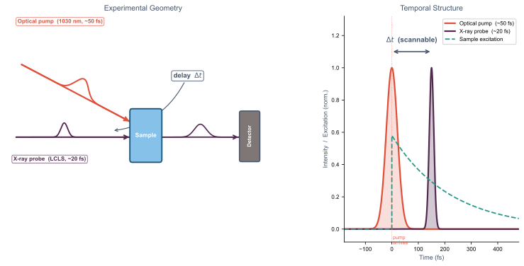

Motivation — Why Ultrafast Pulses at LCLS?

The Goal
- Pulse duration short enough to resolve ultrafast dynamics — target <20 fs
- Sufficient pulse energy to drive nonlinear excitation in experiments
- Compatible with LCLS-II repetition rates (up to MHz)